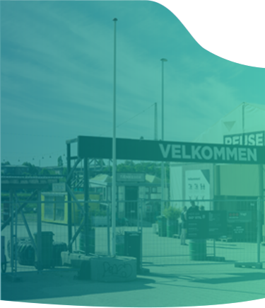
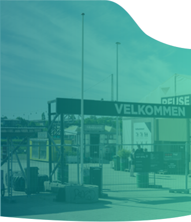

At Reuse at Godsbanen, you can make a bargain and become wiser about recycling and upcycling. Instead of items getting wasted, they are presented nicely and can be picked up by others. This way, things get an extra chance before they finally become waste.
Deliver Items
Do you have a lot of used items, you think could get a new life on Reuse? Send it to us or deliver yourself. You can hand over useful items at Reuse during opening hours, or at all Aarhus's six traditional recycling stations.
Events
Reuse invites to recycling and upcycling events organized by our volunteers. All events are open for participation and participation is free.
Volunteer
Reuse consists of many volunteers and you can become part of the team. Do you have your mind full of ideas and are you interested in helping down at the station, please feel free to contact us!